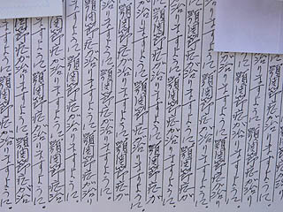

高塚地蔵尊/大分県日田市
日田の高塚地蔵尊。
御利益満点の寺として九州一円にその名をとどろかせる名刹である。
門前には坂道に沿ってズラリと小さな店が並んでおり不思議な景観を生み出していた。
訪れたのは夕方だったがそれでも大勢の参拝客が訪れていた。
賑やかな門前町を過ぎ、境内に入ると幹がブツブツしている樹齢千年を越す銀杏の巨木がある。
この乳銀杏の言い伝えにより寺は元々乳の神様として有名だった。
この木のブツブツが乳首に似ている、とかそういう理由なんだと思う。
実際、銀杏の木には数珠や御神酒などが奉納されており、信仰の篤さを物語っている。
木の下にはお地蔵さんがおり、その首にはレイの様なものがかかっている。
これは乳首を模したものだそうで、元々は奉納者の年の数だけ布で作った乳首を奉納する習慣だったそうだ。
それが何時の間にか物凄いゴージャス乳首レイになっちゃってる。
まあ、全国にあるおっぱい絵馬の乳首バージョンといえなくもないが直接乳を連想させる造型ではない。どっちかというと飴玉みたいだった。
まあ、それだけ真剣に願ってるということなのでしょう（右がオールドスクール奉納乳首）。
さてさて。
大勢の参拝客に混じって本堂へ。
ここのメインディッシュは本堂にあるたくさんのお願い紙である。
これまでにも何度か紹介したが、九州北部ではひとつの願い事を何度も連続して書いた紙を奉納する習俗がある。
正確に把握している訳ではないが、この習俗は西日本に広く分布しているが特に九州北部に濃密に見られる。
この紙自体の正式な呼び名が判らないので、「祈願文」という呼称を採用させてもらう。
「目目目目目目目目・・・」と書かれた眼病平癒の祈願がルーツかとは思うのだが、そこは願い事の総合商社、様々な願い事が書かれ、奉納されている。
このお寺は神社のように拝殿と本殿が２つの建物に分かれている。というかまるっきり神社の建物みたいなんすけど。
こんな感じでびっしりと奉納されている祈願文。
ジッと見ているとゾッとする。
そうこうしている内にもおみくじを貼付けていく人などもいて増々増殖気味。
この祈願文、元々は祈願者の自発的な奉納によるものだったのだろうが、今ではお寺サイドで願い事を書き込むだけのフォーマット化された用紙が配付されている。
しかし、そんな一言お願いよりも見る者のハートを鷲掴みにするのはこんな真剣そのものの祈願文。
顎関節症が治るかわりに腱鞘炎になりそうな勢いの祈願文を始め様々な祈願文が。
|

|

|
これは祈願文を祈願者の年の数だけ書いて奉納するというもの。
12才、タカラジェンヌを目指す。頑張れ！
満願成就した祈願者のお礼も年の数だけ。
現代は様々なお祈りに満ちている。
住宅ローンの融資、職場の人間関係、悩みは人様々である。
このような極めて現代的な悩みと伝統的な習俗が同居しているところに、単なる昔からの言い伝えだけに終わらない現代まで連続性を持った信仰の形態が伺える。
中にはプリンターで印字してきた横着者も。
神様（あ、お地蔵さんでしたね）が下のふたつの祈願文を見たらどっちのお願いを聞くかは一目瞭然ですね。
野芥縁切地蔵尊でも少し述べたが、このように祈願文をオープンに開示する奉納は奉納する側だけでなくそれを見る側にも効果があると睨んでいる。
この祈願文を見る事で同じ悩みを抱えた人を見つけ、それによって癒されるという図式があるように思えてならない。
そこには、本来受動的であるはずの参拝者が祈願文の奉納という能動的な行動により他の同じような人々を救済する悩みの互助システムが構築されているのではなかろうか。
お地蔵さんの御利益という触媒を介して人々が互いに励ましあう、私はここの大量の祈願文にそんな感動的な姿を見た。
一言でいうと「みんな悩んでるんだ」という事ですな。
「夫が焼酎を飲みませんように」と21回書かれた祈願文は奉納者が21才である事を示す。・・・21才ですか〜。
「課長の転勤」かあ〜・・・ここまで書かれる課長って・・・
中には「すいえいがじょうずになりますように」とか「さかあがりができますように」などといった具体的かつ微笑ましいお願いもある。
でもその近くには14回書き連ねられた「早く犯人が見つかりますように」・・・早く見つかるといいですね。
拝殿はぐるりと祈願文に囲まれた恰好になっている。お地蔵さん、大変ですが宜しく頼みますよ。
本堂の裏手の崖には雛段状にお地蔵さんがたくさん並んでいる。
満願成就のお礼の奉納なのだろうか。何となく願い事が成就した晴れ晴れしい雰囲気が伝わってくるから不思議だ。
お地蔵さんの群れの中、一番目立つところにはこんなお地蔵さんが。
シドニーで金メダルをとった福岡出身のアノ人の満願成就地蔵である。
参拝客の多くは「ほお〜」と言いながら手を合わせている。
「祈願文奉納→満願成就→地蔵奉納→で、それを他の人が参拝」という参拝無限ルーティーンの小宇宙が繰り広げられている。
「ママになっても金メダル」・・・となったらここにもう一体増えるんでしょうか。北京、頑張って下さい。
お地蔵さんが並んでいる崖の真ん中には一念洞と呼ばれる平成14年完成の掘られたてホヤホヤのトンネルがあり、中にもお地蔵さんがズラズラ〜っと並んでいた。
閻魔様もやけに爽やかな風景をバックに鎮座している。
洞内に説明書きがあってそれによるとお地蔵さんにかけられた帽子やヨダレ掛けは年に二回祈願文と一緒に焼納するということだ。
・・・えっ！祈願文も年二回処分？！
焼納は12月と7月。
約4ヶ月間でこんなにたくさん奉納されるのか・・・
などとビックリしていたら祈願文に限っては年四回。ここを訪れたのは焼納後わずか一月足らずだと言う事が判明。
凄い。凄すぎる！一体どれだけの人が祈願文を奉納しに来るのだ？！
2006.4.
珍寺大道場 HOME